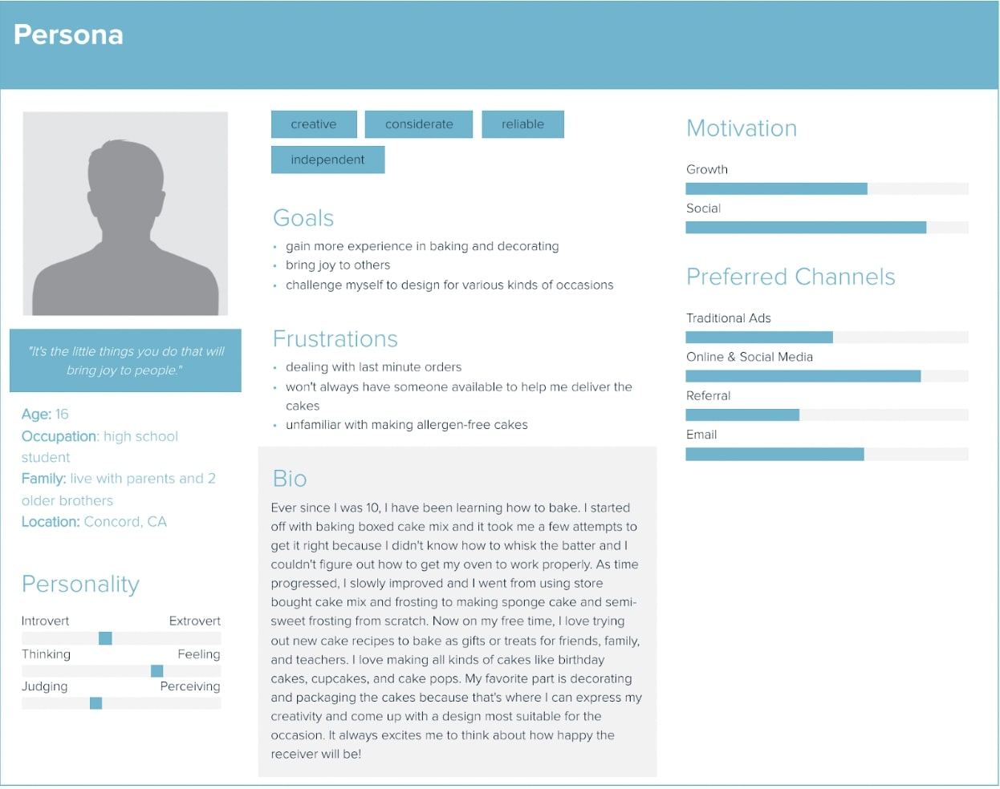
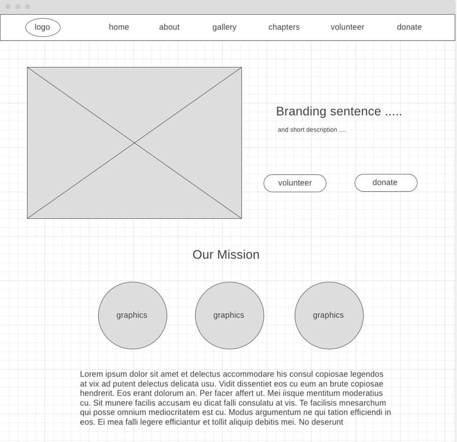
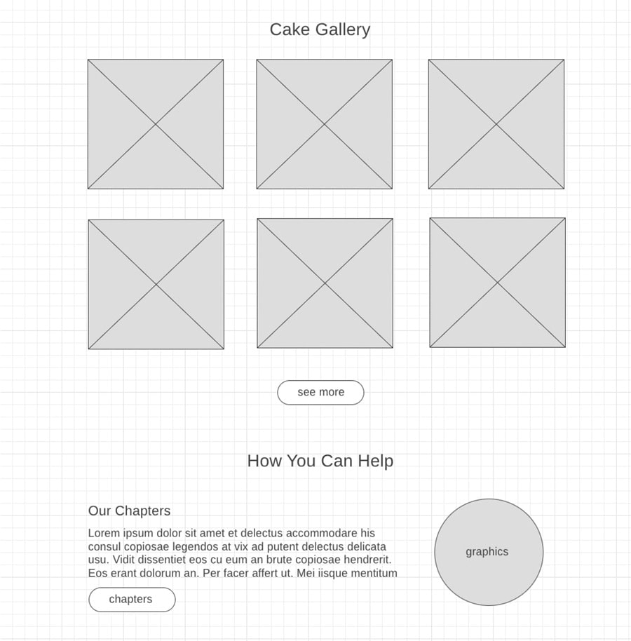
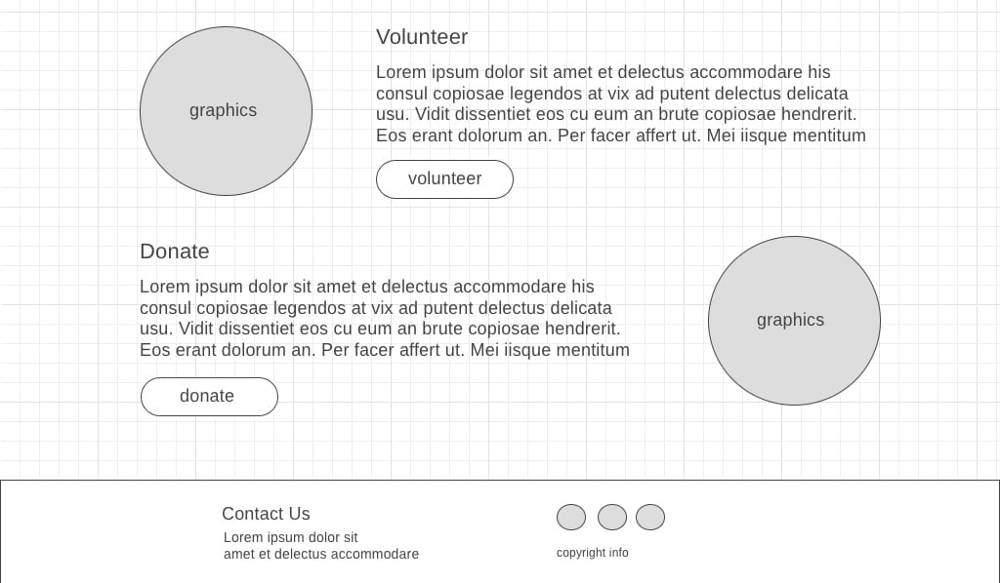
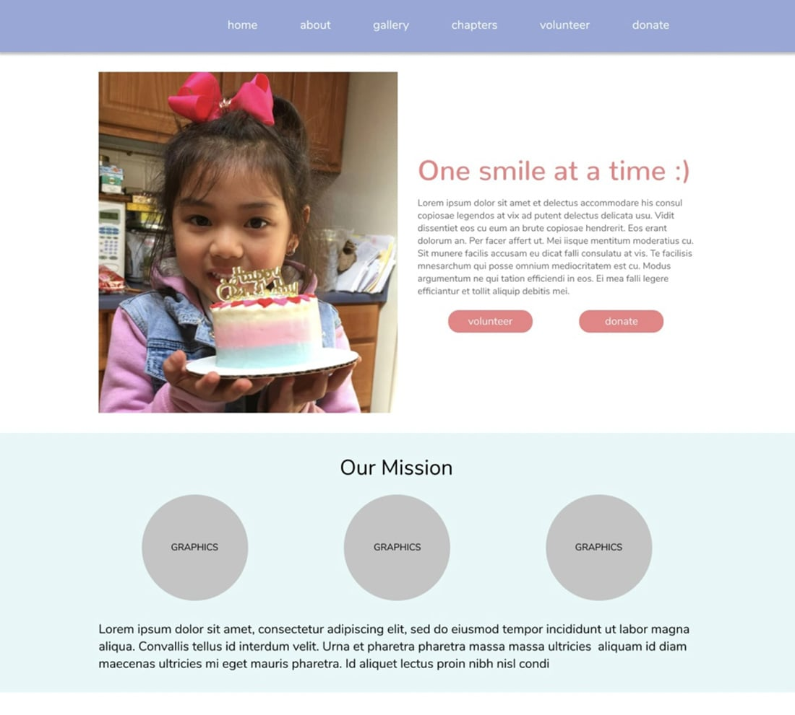
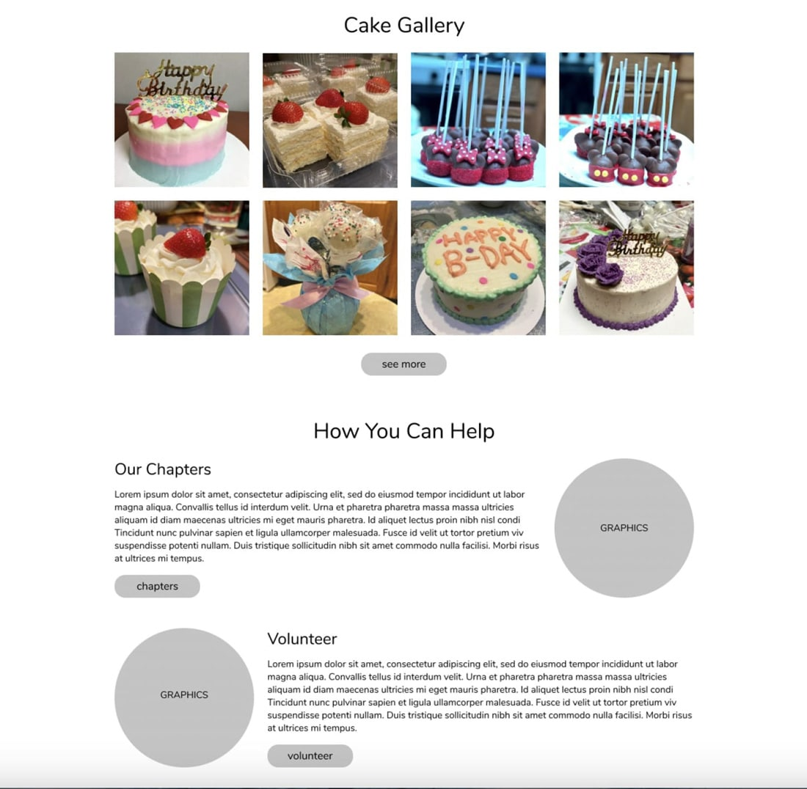
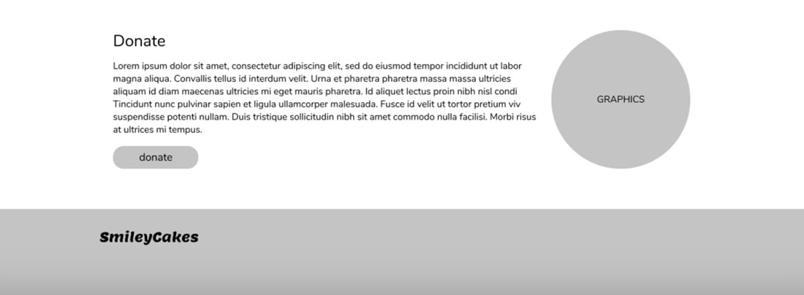
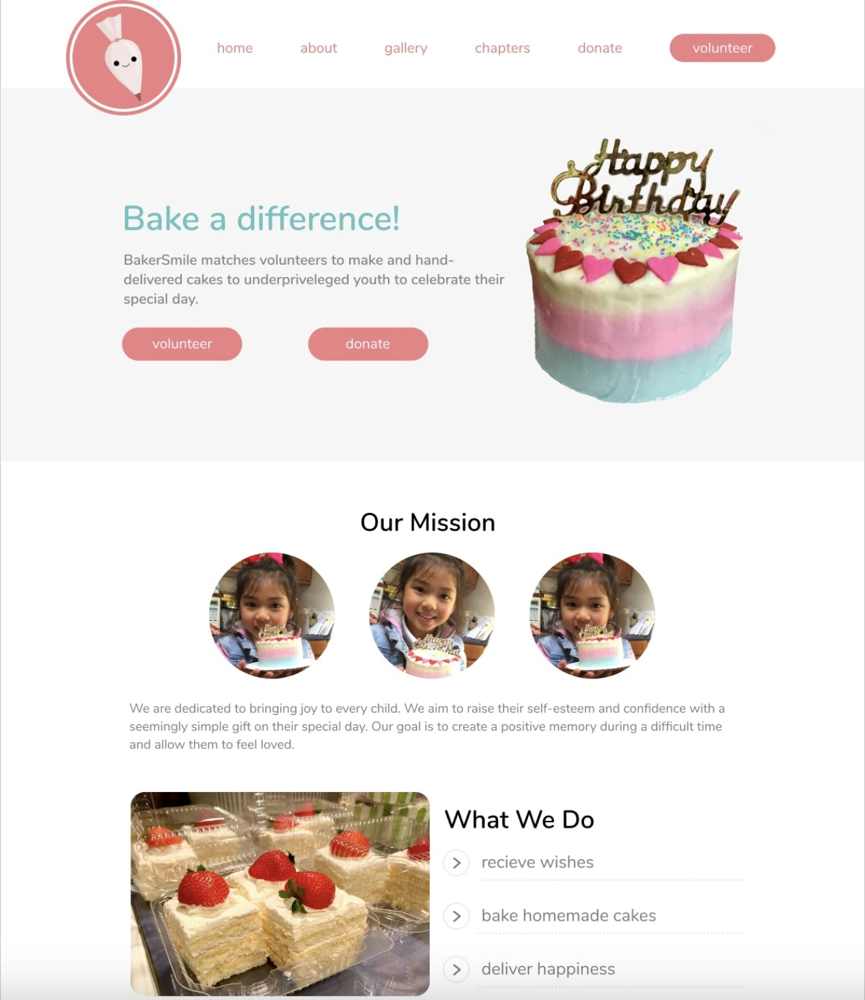
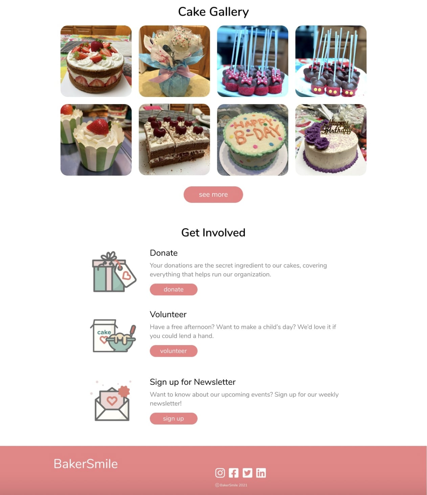

Jenny

BakerSmile
Figma | Illustrator | Photoshop
UX / UI
2021
Background
This is a project where I designed the front page of a non-profit informational website for desktop and mobile view. Because I enjoy baking, my concept is a nonprofit cake baking organization that specializes in designing cakes for underprivileged youth, including youth in foster care, homeless shelters, and low income housing. I focused on designing a website that expresses their passion for bringing joy to every child and making them feel special.
Research
Target Audience
My target audience are middle class young teens and adults ranging from 13-25 years old. They have a spacious kitchen workspace and convenient access to ingredients and gadgets. They are responsible and reliable and are confident in their baking and decorating skills. They have plenty of free time and enjoy designing cakes to make people happy. Some examples are:
- A middle school or high school student that lives with a supportive family and in a suburban area, so it's convenient to shop for ingredients. Their parents have a flexible schedule and can help them make deliveries.
- A young adult, either in college or just starting off in their career, has a stable income and a flexible work schedule. They have plenty of free time to bake cakes and make deliveries or have compassion for underprivileged youth and would like to make a donation.
Comparative Analysis
I found these two websites that are also a non-profit organization that matches volunteers with underprivileged youths to bake and deliver birthday cakes for them. Both sites have selections for you to donate or volunteer and sections where you can view their creations, chapters, and impact.
At a glance, the website on the left certainly looks more kid friendly than the one on the right because of the cute graphics, cheerful color scheme, and friendly typeface. It even has a very cute branding name: For Goodness Cakes. The website on the right, Cake4Kids, is less decorative and more limited in color. It mainly uses blue and white, which are colors you usually see for a professional website, so that was probably the look they were going for. For Goodness Cakes looks more authoritative and trustworthy because of how well designed and organized their site is, but if you read the content displayed on Cake4Kids, it is very informative and knowledgeable. Both sites include their contact information, including their address, email, and phone number, which also makes them seem more trustworthy. I definitely like the For Goodness Cakes website more because it is more inviting. As for Cake4Kids, it has great information and knowledge, which boosts their site's credibility, but it is missing that welcoming feeling for users. I would conclude that Cake4Kids is a good example in terms of information and credibility, but a bad example for the design of the site. On the other hand, I think For Goodness Cakes is a great example for the website's design, but it could use a little more proof of credibility and knowledge like Cake4Kids.
Persona
Outline
Narrative
- Main navigation: Home, About, Our impact, Gallery, Chapters, Volunteer, Donate
- Header: Branding sentence, Finished cake result, Donate and volunteer button
- Section — Our mission: About us, Our impact
- Section — mini cake gallery: 3 x 2 grid: square photos of some cakes made, See more button
- Section — how you can help: Description of volunteering, Description of donating, Links to volunteer, chapters, donate
- Footer: Contact us, Links to social media
Wireframe
  Visual Design: Feedback and Revisions
First Draft
  - Site feels a bit text heavy maybe because I haven't added all of the images yet or the “How you can help” part
- The site feels targeted towards mothers of young children, especially because of the picture of a young girl with a cake
- The square pictures and circle graphics is inconsistent, makes the hierarchy confusing
- The navigation bar text is incredibly small and nearly invisible compared to the body text in the site — seems like it is one of the least important parts of the website, if not just a mere decoration
- The big chunks of text in the testimonials of the "how you can help" section look like standalone sections. The text has too much cognitive load and makes each paragraph seem like its own section. The headers of each section are also not contrasted enough - on first glance it is difficult to see which section ends where based on your typography choices.
- Probably don't need so much text because people won't read all of it. One quick sentence and larger font and a "Learn more" button can function better to give some information about the topic on the home page and remove the cognitive load.
- Consider making the text hierarchy stronger by using bold text more frequently
- The footer definitely needs a lot more info: the address, phone number, social media icons, etc. are some places to start
- More color contrast is needed all over the website. The pastels are nice, but the white text over them makes things really hard to read.
- Make the text a dark grey instead of black, because it feels like there is a slight disconnection between the very light pastel colors with the grey text and the black text.
- Maybe stick to one font or 2 max. Could pick a font for the logo that would fit with the font from the website more
Second Draft
 - Space out the sections more like between "What we do" and "Cake gallery" so they look like they are more separated
- The target audience is very clear; call to action is also very clear - has multiple buttons all up and down the page asking for volunteers. It is not overshadowed at all by the donation buttons
- From a hierarchy standpoint, the drop down arrows under "What We Do" blend in with the rest of the text - contrasting them with the text by adding color will help solidify the hierarchy
- There is one blue heading - this is mostly a "mission statement" of sorts rather than a heading but be aware that eyes travel a lot to that blue at the top of the page
- If not adding anything else to the footer, consider making it smaller as it calls a lot of attention
- There can be more differentiation between the see more button and get involved buttons (to show which one's more important, maybe adding an arrow to show that the gallery is expandable?)
- Recommend adding more color in the middle sections — mostly see it in the beginning and end
- Another would section would be like upcoming events that are happening that kids can join or fundraisers to make it more interesting
Final Draft

Conclusion
I designed this non-profit baking organization website for desktop and mobile view in Figma. I used Adobe Illustrator to create the graphics and Photoshop to crop the background of images. I also used photos of my own cakes I've created. I am proud of how cohesive the images are with my designs and color choices and how friendly and welcoming the overall website appears for my target audience.